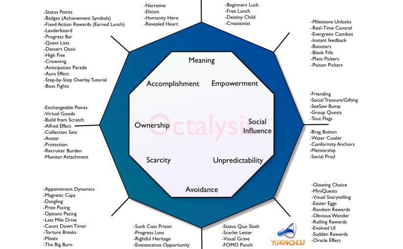

Gamification is een term waarbij boeiende en leuke mechanismen in games toegepast wordt op een producten die als niet-game achtig worden beschouwd. Dit proces wordt door Yu-Kai Chou (z.d.) genoemd als “Human-Focused Design”. Het is een ontwerpproces dat de menselijke motivatie optimaliseert in tegenstelling tot de pure efficiëntie bij “Function-Focused Design”.
In dit geval is het doel van gamification om het product leuk te maken voor de eindgebruikers. Zo probeer ik de internationals te motiveren om het product daadwerkelijk te gebruiken waardoor ze minder snel vragen hoeven te stellen aan de recruiters en of HR.
De term gamification wordt gebruikt omdat de gaming industrie als eerste was met het beheersen van de Human-Focused-Design.
Yu-Kai Chou is een van de eerste pioniers in gamification. In de laatste decennium heeft onderzoek gedaan naar gamification en heeft uiteindelijk een gamification framework bedacht genaamd: Octalysis.

Octalysis - een complete gamification framework bedacht door Yu-Kai Chou
Meaning
Meaning is de drive waarbij een speler gelooft dat hij of zij iets doet waar hij of hij voorbestemd
is. De speler is de uitverkorene in het verhaal van dit spel. Een symptoom kan zijn dat de speler
hierdoor veel van zijn tijd zal spenderen aan het onderhouden van een forum of dingen creëert voor de
hele community. Dit komt ook van toepassing als er sprake is van ‘beginners geluk’. Een effect die
mensen laat geloven dat ze speciaal zijn als ze bijvoorbeeld een speciale item verkrijgen aan het
begin van een spel die andere niet hebben.
Development & Accomplishment
Development & accomplishment zijn de drive om progressie te maken, vaardigheden te ontwikkelen en
uitdagingen te overwinnen. Een badge of een trofee uitdelen uitdelen zonder een uitdaging is bijna
nutteloos.
Empowerment of Creativity & Feedback
Dit gebeurd wanneer spelers bezig zijn met een creatief proces waarbij ze dingen moeten uitzoeken en
verschillende combinaties moeten uitproberen. Alleen creativiteit uiten is niet genoeg. Ze moeten ook
in staat zijn om de resultaten van hun creativiteit te zien, feedback te ontvangen en op hun beurt te
reageren.
Ownership & Possession
De is de drive waarbij de gebruikers gemotiveerd zijn omdat het lijkt alsof ze iets in bezit hebben.
Wanneer de speler voelt dat diegene in bezit is van iets, dan willen ze dat verbeteren of meer hebben
van datgene wat ze in bezit hebben. Denk hierbij aan virtuele in-game geld. Als een persoon veel tijd
spendeert aan het personaliseren van zijn of haar profiel of avatar, dan voelen ze meer dat het echt
iets is van hunzelf. Dit is ook waarom het verzamelen van stempels of puzzelstukjes leuk maakt.
Social Influence & Relatedness
Deze drive omvat de sociale elementen die mensen drijven. Denk hierbij aan mentorschap, acceptatie,
sociale reacties, competitie, kameraadschap en afgunst. Wanneer een persoon een bekende ziet die
geweldig is in een bepaalde skill of iets buitengewoons bezit, wordt de persoon gedreven om hetzelfde
niveau te bereiken. Het is ook de drive die mensen bezitten om dichter bij mensen, plaatsen of
evenementen te komen waar we ons mee kunnen identificeren. Als men een product ziet dat ze aan hun
jeugd herinnert, zou het nostalgisch gevoel waarschijnlijk de kans vergroten dat men het product
koopt. Social Influence & Relatedness is relatief goed bestudeerd omdat bedrijven tegenwoordig veel
prioriteit geven aan het optimaliseren van hun online sociale strategie.
Scarcity & Impatience
Dit is de drive om iets te willen omdat je het niet kan hebben. Veel games hebben een afspraak
dynamiek. Bijvoorbeeld dat de speler een paar uur moet wachten voordat ze een beloning krijgen. Dat de
speler op dit moment niks krijgt, motiveert het hun om er de hele dag over na te denken.
Unpredictability & Curiosity
Over het algemeen is dit een onschuldige drive. Mensen zijn van nature nieuwsgierig en als ze niet
weten wat er gaat gebeuren, gaan de hersenen erover nadenken. Veel mensen kijken naar films, series of
lezen boeken vanwege deze drive. Deze drive is ook de primaire factor achter gokverslaving.
Loss & Avoidance
Deze drive is gebaseerd op het vermijden van negatieve dingen. Op kleine schaal kan dit zijn om te
voorkomen dat eerdere werk verloren gaat. Op grotere schaal zou het kunnen zijn dat iemand toegeeft
dat alles wat diegene tot nu toe heeft gedaan nutteloos is omdat diegene nu stopt. Ook kansen die
vervagen hoort bij deze drive. Mensen hebben het gevoel dat als ze niet onmiddellijk handelen, ze de
kans voor altijd verliezen.
Chou, Y. (z.d.). Octalysis – the complete Gamification framework. Opgeroepen op december 7, 2019, van Yu-kai Chou: https://yukaichou.com/gamification-examples/octalysis-complete-gamification-framework/
Staff, C. B. (2012, 19 april). 5 examples of great gamification. Geraadpleegd op 15 oktober 2019, van https://www.creativebloq.com/web-design-tips/5-examples-of-great-gamification-1233261
Muntean, C. I. (2011). Raising engagement in e-learning through gamification. The 6th International Conference on Virtual Learning. Geraadpleegd van http://icvl.eu/2011/disc/icvl/documente/pdf/met/ICVL_ModelsAndMethodologies_paper42.pdf